CS180: Intro to Computer Vision and Computational Photography
University of California, Berkeley
Project 5A: The Power of Diffusion Models!
Exploring Diffusion Models for Image Generation and Editing
Name: Etai Abukasis
Part 0: Setup
Here I play around with different prompts using the DeepFloyd IF diffusion model and compare 20 vs 120 inference steps. I use a random seed of 67 (dead meme). The 120-step images have noticeably more detail. We can see sharper textures and more coherent structures compared to the 20 step versions.
Custom Text Prompts and Generated Images
First row is 20 steps, second row is 120 steps for each prompt:
Prompt 1: "an oil painting of a snowy mountain village"
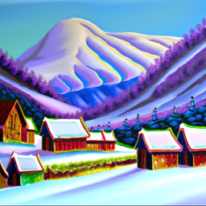
20
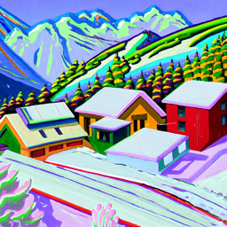
120
Prompt 2: "a photo of the amalfi coast"
20
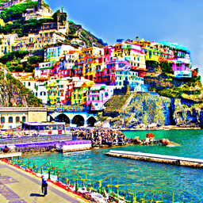
120
Prompt 3: "a photo of a man"
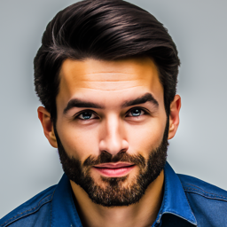
20
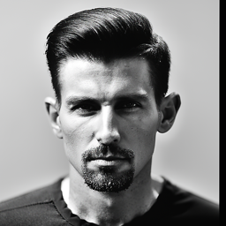
120
Analysis
Comparing the results, we see that higher inference steps make more refined and detailed images. In the 20 step version the images are slightly more noisy. But, the 120 step version allows the diffusion model more iterations to denoise and refine the output. This ends up resulting in sharper details and better image quality.
Part 1: Sampling Loops
For part 1 I implemented various sampling loops using the pretrained DeepFloyd denoiser
1.1 Implementing the Forward Process
I implemented the forward noising process that gradually corrupts a clean image. I used the provided formula (on spec) that blends the original image with random Gaussian noise based on the timestep t. We can see how the Campanile slowly disappears into rainbow static as t increases
Results: Noisy Campanile at Different Timesteps
Original Image (t = 0)
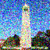
t = 250
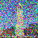
t = 500
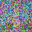
t = 750
1.2 Classical Denoising
First I tried the naive approach of using a Gaussian blur to remove noise. However, this doesn't work well at all because the blur just smears everything together and can't tell the difference between noise and actual edges in the image. The results are blurry and dont have too much details
Results: Gaussian Blur Denoising
Noisy (t=250)Gaussian Blur (t=250)Noisy (t=500)
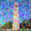
Gaussian Blur (t=500)Noisy (t=750)
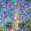
Gaussian Blur (t=750)
Gaussian blur fails to recover the original image structure. While it removes some high-frequency noise, it cannot distinguish between noise and actual image content, resulting in blurry outputs that lose important details.
1.3 One-Step Denoising
Here I use the pretrained UNet to estimate the noise in a single step. The model predicts the noise ε, and I recover the clean image using x₀ = (xₜ - √(1-ᾱₜ)·ε) / √ᾱₜ. It works okay for low noise levels like t=250, but at higher noise levels the results get pretty bad - the model just wasn't trained to handle that much noise all at once.
Results: One-Step Denoising
For each timestep, we show the original image, the noisy image (from the forward process), and the one-step denoised estimate:
t = 250
OriginalNoisy (t=250)One-Step Denoised
t = 500
OriginalNoisy (t=500)One-Step Denoised
t = 750
OriginalNoisy (t=750)One-Step Denoised
The one-step denoising works reasonably well at lower noise levels (t=250), but struggles to fully recover the image at higher noise levels (t=500, 750). This is because a single denoising step cannot accurately remove large amounts of noise—the model was trained to remove small amounts of noise iteratively.
1.4 Iterative Denoising
This is where things get interesting. Instead of trying to remove all noise at once, I implemented iterative denoising with strided timesteps (starting at t=990, stepping by 30). By gradually removing noise over many steps, the results are way better than one-step denoising. You can watch the image slowly emerge from the noise - it's pretty cool to see.
Denoising Progression (Every 5th Step)
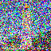
t=660
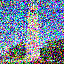
t=510
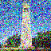
t=360
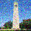
t=210t=60
Comparison: Iterative vs One-Step vs Gaussian Blur
OriginalIterative DenoisingOne-Step Denoising
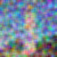
Gaussian Blur
Iterative denoising produces significantly better results than one-step denoising or Gaussian blur. By gradually removing noise over many steps, the model can accurately reconstruct the original image structure.
1.5 Diffusion Model Sampling
Now for the fun part - generating images from pure noise! I start with random Gaussian noise and run the iterative denoising loop to produce brand new images. The model basically hallucinates images from what it learned about natural photos. The results are a bit hit or miss without guidance, but it's still impressive that coherent images emerge from random static.
Results: 5 Sampled Images
Sample 1Sample 2Sample 3Sample 4Sample 5
1.6 Classifier-Free Guidance (CFG)
Classifier-Free Guidance is a game changer. The idea is to combine conditional and unconditional noise estimates using ε = εᵤ + γ(εc - εᵤ). With γ=7, the model really locks onto the text prompt and produces much sharper, more coherent images. Compare these to the samples from 1.5 - the difference is night and day.
Results: 5 Sampled Images with CFG (γ = 7)
Sample 1Sample 2Sample 3Sample 4Sample 5
1.7 Image-to-image Translation
SDEdit lets us edit real images by adding noise and then denoising. The key parameter is i_start - lower values add more noise allowing bigger changes, while higher values preserve more of the original. You can see at i_start=1 the images are completely different, but by i_start=20 they look almost identical to the original. It's a nice way to control the strength of the edit.
This is where SDEdit gets really fun - I applied it to hand-drawn sketches and random web images. The model tries to make them look like real photos while keeping the basic structure. The stick figures turn into actual people, and my rough sketches get filled in with realistic details. Lower i_start values give wilder interpretations, while higher values stay closer to the original drawing.
For inpainting, I implemented the RePaint approach where we fill in masked regions while keeping the rest of the image intact. The trick is that at each denoising step, I replace pixels outside the mask with the appropriately-noised original image. This forces the model to generate content that blends seamlessly with the surroundings.
Campanile Inpainting
OriginalMaskInpainted Result
Custom Inpainting 1
OriginalMaskInpainted Result
Custom Inpainting 2
OriginalMaskInpainted Result
1.7.3 Text-Conditional Image-to-image Translation
Here I combine SDEdit with text prompts to guide what the output looks like. Instead of just projecting to a generic "photo", I can tell it to make "a rocket ship" and watch the Campanile transform into a rocket. The lower i_start values create more dramatic transformations while higher values keep more of the original structure but with rocket-like features.
Visual anagrams are super cool - they're images that look like one thing right-side up and something completely different when flipped. I compute noise estimates for both orientations and average them, so the denoising has to satisfy both prompts at once. The old man/campfire one works especially well - you can clearly see both interpretations depending on how you look at it.
Visual Anagram 1: Old Man / Campfire
Prompt 1: "an oil painting of an old man"
Prompt 2: "an oil painting of a campfire"
Normal: "an oil painting of an old man"Flipped: "an oil painting of a campfire"
Visual Anagram 2: Skull / Waterfalls
Prompt 1: "a skull"
Prompt 2: "waterfalls"
Normal: "a skull"Flipped: "waterfalls"
Visual Anagram 3: Man Wearing Hat / Snowy Village
Prompt 1: "a man wearing a hat"
Prompt 2: "a snowy village"
Normal: "a man wearing a hat"Flipped: "a snowy village"
1.9 Hybrid Images
Finally, I made hybrid images using the same frequency-based trick from earlier in the course - but now applied during diffusion! I take low frequencies from one noise estimate and high frequencies from another, so up close you see one image and from far away you see something else. Try squinting at the skull/waterfall one - the skull really pops out when you blur your vision.
Hybrid Image 1: Skull + Waterfall
Low-frequency prompt: "a skull"
High-frequency prompt: "a waterfall"
Hybrid: "a skull" (low freq) + "a waterfall" (high freq)
Hybrid Image 2: Old Man + Campfire
Low-frequency prompt: "an oil painting of an old man"
High-frequency prompt: "an oil painting of a campfire"
Hybrid: "an oil painting of an old man" (low freq) + "an oil painting of a campfire" (high freq)
Part 5B: Flow Matching from Scratch!
Part 1: Training a Single-Step Denoising UNet
In this part, I built my own denoiser from scratch using a UNet architecture. The idea is simple: given a noisy image z = x + σε, train the network to predict the clean image x directly using MSE loss. It's a good starting point before getting into the more complex flow matching stuff.
1.2 Using the UNet to Train a Denoiser
I trained the UNet on MNIST digits with a fixed noise level of σ = 0.5. The network learns to map noisy inputs to clean outputs by minimizing L2 loss. It's basically learning "what does a clean digit look like given this noisy version?"
Visualization of Noising Process
Visualizing different noising processes over σ ∈ [0.0, 0.2, 0.4, 0.5, 0.6, 0.8, 1.0]:
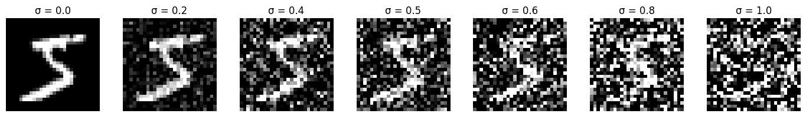
MNIST digit at different noise levels
1.2.1 Training
I trained for 5 epochs with batch size 256 and learning rate 1e-4. The loss drops quickly in the first epoch and then gradually converges. You can see in the results that by epoch 5, the model does a decent job recovering the original digits from the noisy inputs.
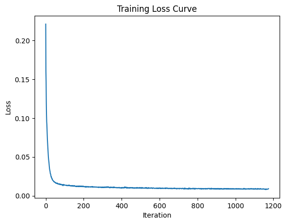
Training loss over iterations
Sample results on test set with noise level σ = 0.5:
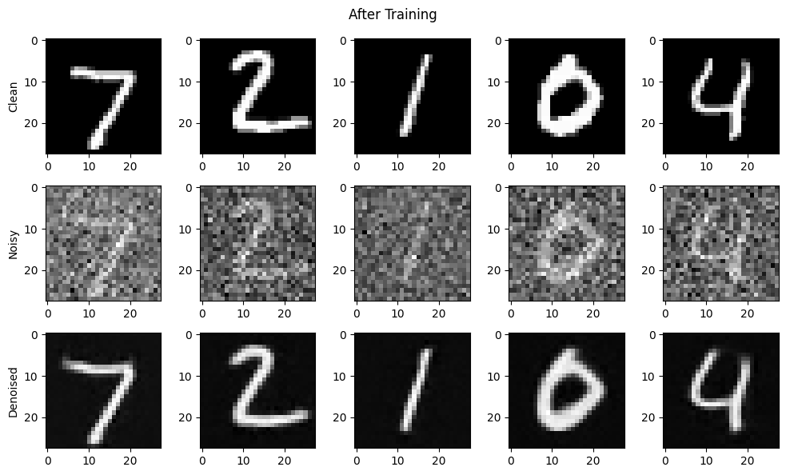
Denoising results after 1st and 5th epoch
1.2.2 Out-of-Distribution Testing
Here I tested the denoiser on noise levels it wasn't trained on. Unsurprisingly, it struggles with σ values far from 0.5 - it does okay near the training noise level but gets worse the further you go. This shows why we need a more flexible approach that can handle any noise level.
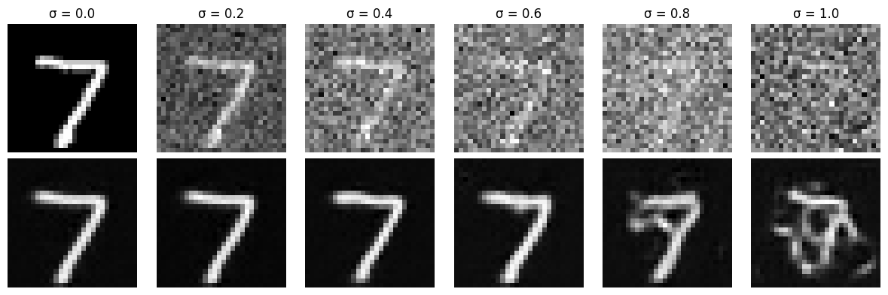
Denoising performance on different noise levels
1.2.3 Denoising Pure Noise
What happens if we try to denoise pure noise? I trained a separate model on σ = 1.0. Since there's literally no signal in the input, the MSE loss pushes the model to output the "average" of all training digits - resulting in blurry blobs that look like a mix of 0-9. This is an interesting failure case that motivates iterative approaches.
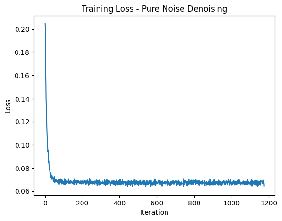
Training loss over iterations
Sample results on pure noise:
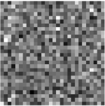
Input (Noise)
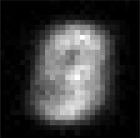
Epoch 1Epoch 5
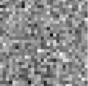
Input (Noise)
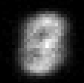
Epoch 1
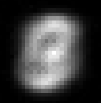
Epoch 5
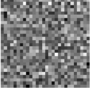
Input (Noise)
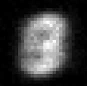
Epoch 1Epoch 5
Observations: The outputs converge to a blurry average of all training digits. With MSE loss, the model learns to predict the centroid that minimizes squared distances to all training examples. Since the input is pure noise with no digit-specific information, the model outputs the "average digit" - a blend of all 0-9 digits, which appears as a blurry blob.
Part 2: Training a Flow Matching Model
Now for flow matching - instead of predicting the clean image directly, I train the UNet to predict the "velocity" v = x₁ - z that points from noisy to clean. Then I can integrate this velocity field over time to gradually denoise. This is more flexible than the one-step approach and can handle generating images from pure noise.
2.2 Training the Time-Conditioned UNet
I added time conditioning using FCBlocks that modulate the UNet features based on the current timestep t. The model learns v(xₜ, t) where xₜ interpolates between noise and data. This way the network knows "how far along" in the denoising process it is.
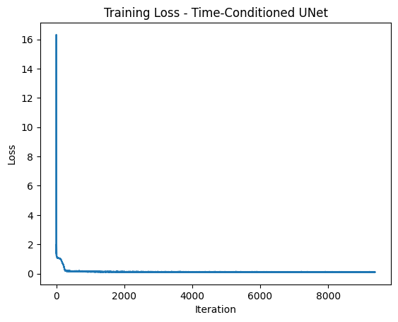
Training loss over iterations
2.3 Sampling from the Time-Conditioned UNet
To generate images, I integrate the learned flow from t=0 to t=1 using Euler steps. Starting from pure noise, I repeatedly apply x_{t+dt} = xₜ + dt·v(xₜ, t) until I get a clean image. You can see the samples improve a lot from epoch 1 to epoch 10 - the digits become much clearer and more recognizable.
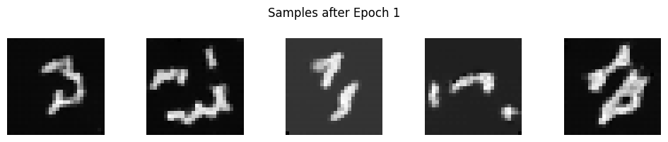
Epoch 1
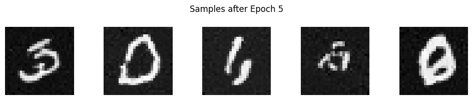
Epoch 5
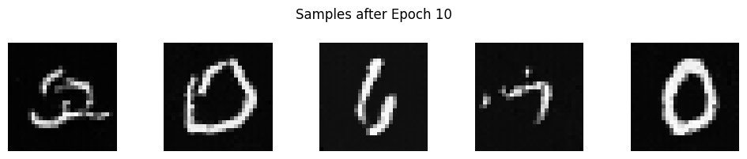
Epoch 10
2.5 Training the Class-Conditioned UNet
To control what digit gets generated, I added class conditioning to the UNet. The key trick is dropping the class label randomly (p=0.1) during training - this lets us use classifier-free guidance at sampling time to get sharper, more recognizable digits.
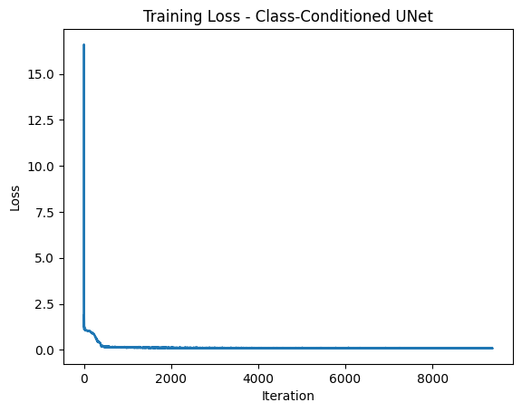
Training loss over iterations
2.6 Sampling from the Class-Conditioned UNet
For sampling, I use CFG with γ=5: v = v_uncond + γ(v_cond - v_uncond). This amplifies the class signal so the generated digits are cleaner and actually look like the target class. The improvement from epoch 1 to epoch 10 is pretty dramatic - by the end you can clearly tell what digit each sample is supposed to be.
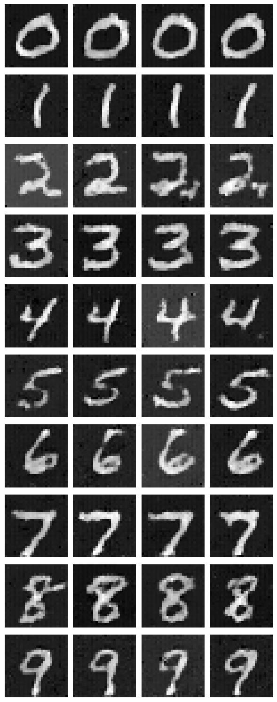
Epoch 1
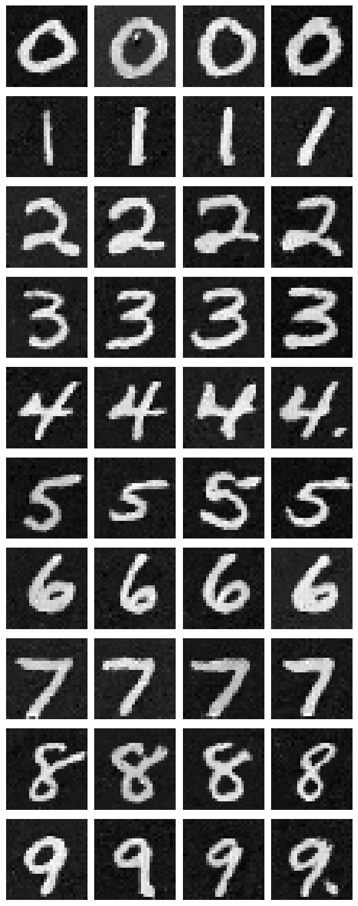
Epoch 5
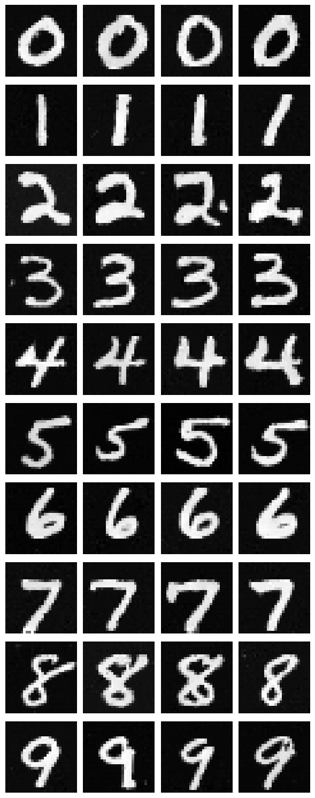
Epoch 10
Training without Learning Rate Scheduler
As a bonus, I also tried training without the learning rate scheduler. To compensate for not having the exponential decay (gamma=0.95), I just used a lower constant learning rate of 1e-3 instead of 1e-2. The results are pretty similar - turns out you can get away without the fancy scheduling if you pick a good constant rate.